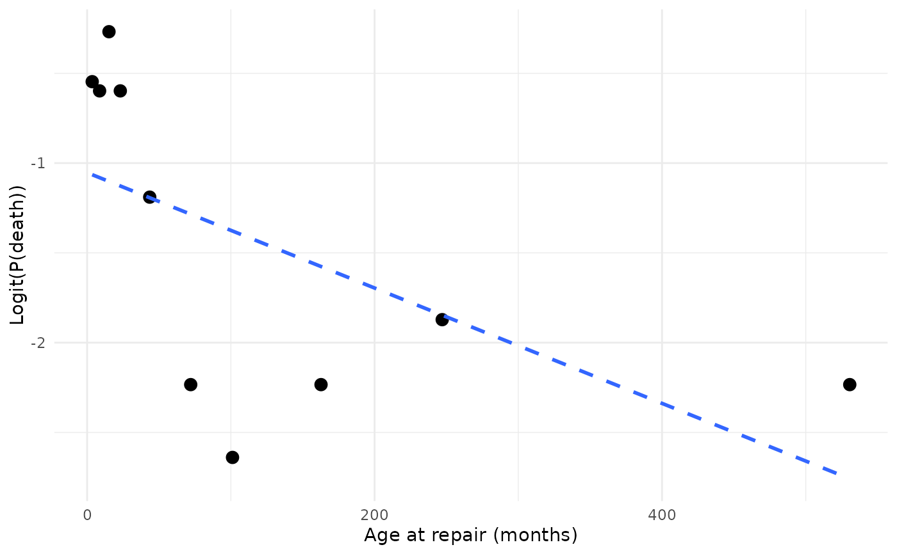

Group a continuous covariate into quantile bins, compute the event
probability (or hazard rate) per bin, and apply a link transform
(logit, Gompertz, or Cox).
This is the R equivalent of the SAS logit.sas and logitgr.sas
macros.
Usage
hzr_calibrate(
x,
event,
groups = 10L,
by = NULL,
link = c("logit", "gompertz", "cox"),
time = NULL
)Arguments
- x
Numeric vector: the continuous covariate to calibrate.
- event
Numeric vector: event indicator (1 = event, 0 = no event).
- groups
Integer: number of quantile bins (default 10).
- by
Optional factor or character vector for stratified calibration (SAS
logitgr.sasfunctionality). If provided, calibration is computed within each stratum. DefaultNULL(no stratification).- link
Character: transform to apply to event probabilities. One of
"logit"(default),"gompertz"(complementary log-log), or"cox".- time
Optional numeric vector: follow-up time, required when
link = "cox". The Cox link computes \(\log(\text{events} / \sum \text{time})\) (constant hazard rate).
Value
A data frame with one row per group (or per group-by-stratum combination) and columns:
- group
Integer group label.
- by
Stratum level (only present when
byis provided).- n
Number of observations in the group.
- events
Number of events.
- mean
Mean of
xwithin the group.- min
Minimum of
xwithin the group.- max
Maximum of
xwithin the group.- prob
Event probability (events / n), or for Cox link: events / sum(time).
- link_value
Transformed probability on the chosen link scale.
Details
Use this function before model entry to assess whether a covariate's relationship with the outcome is approximately linear on the link scale. If the transformed probabilities are roughly linear against the group means, the covariate can enter the model untransformed. Curvature suggests a transformation (log, quadratic) may improve fit.
See also
hzr_deciles() for model-based calibration after fitting.
Examples
data(avc)
avc <- na.omit(avc)
# Logit calibration of age
cal <- hzr_calibrate(avc$age, avc$dead, groups = 10)
print(cal)
#> Variable calibration (logit link, 10 groups)
#>
#> group n events mean min max prob link_value
#> 1 30 11 3.519 1.051 5.388 0.367 -0.547
#> 2 31 11 8.665 5.421 11.532 0.355 -0.598
#> 3 30 13 15.194 11.631 18.497 0.433 -0.268
#> 4 31 11 23.077 18.990 27.828 0.355 -0.598
#> 5 30 7 43.544 28.124 57.167 0.233 -1.190
#> 6 31 3 72.066 59.730 86.408 0.097 -2.234
#> 7 30 2 101.154 86.507 117.522 0.067 -2.639
#> 8 31 3 162.739 121.169 203.733 0.097 -2.234
#> 9 30 4 247.051 205.343 297.140 0.133 -1.872
#> 10 31 3 530.623 324.573 790.981 0.097 -2.234
# \donttest{
if (requireNamespace("ggplot2", quietly = TRUE)) {
library(ggplot2)
ggplot(cal, aes(mean, link_value)) +
geom_point(size = 3) +
geom_smooth(method = "lm", formula = y ~ x, se = FALSE,
linetype = "dashed") +
labs(x = "Age at repair (months)", y = "Logit(P(death))") +
theme_minimal()
}

# }